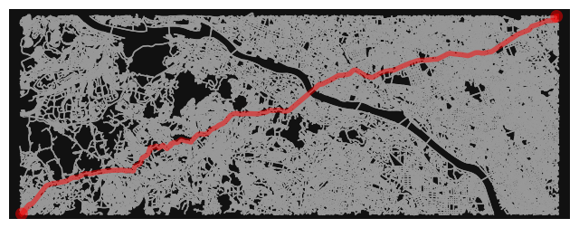

myadd={"aocam":(35.66049,139.71027),"sagacam":(35.56805,139.40280)}最短路問題
扱いたい場所の住所が書かれたcsvファイルを用意し，CSVアドレスマッチングサービスを用いてそれらの住所に対応する緯度経度を取得する。
ここでは，青山学院大学の青山キャンパスと相模原キャンパスの緯度経度を取得する。具体的には，1行目に東京都渋谷区渋谷4-4-25,2行目に神奈川県相模原市中央区淵野辺5-10-1と書いたcsvファイルをagu.csvという名前で保存する。
東京都渋谷区渋谷4-4-25
神奈川県相模原市中央区淵野辺5-10-1
CSVアドレスマッチングサービスのページで「変換したいファイル名」でagu.csvを選ぶ。送信ボタンを押すと，これら2つの住所に対応する緯度経度が書かれたcsvファイルがダウンロードされる。これから，東京都渋谷区渋谷4-4-25の緯度経度は(35.66049,139.71027)で，神奈川県相模原市中央区淵野辺5-10-1の緯度経度は(35.56805,139.40280)であることがわかる。これらを，辞書として保存する。
myadd["aocam"](35.66049, 139.71027)次のセルで定義する関数myshortestpath(from_loc,to_loc)は，from_locを始点，to_locを終点とする最短経路を計算するものである。この経路は，OpenStreetMap上の道路情報を用いて計算される。
from_locとto_locには，それぞれ始点の緯度経度と終点の緯度経度の情報を与える。これらの2点を含む範囲の道路網情報をダウンロードしてグラフGとして保存する。そして，distance.nearest_nodes()によって，G内のノードで始点と終点に最寄りのものをそれぞれ求める。
そして，shortest_path()によって最短経路を求めて，plot_graph_route()によりグラフGと最短経路pathを併せて表示（プロット）する。
import osmnx as ox
import networkx as nx
from osmnx import distance
import folium
def myshortestpath(from_loc,to_loc):
#起点と終点を含む地域の道路ネットワークを取得
north= max(from_loc[0],to_loc[0])
south=min(from_loc[0],to_loc[0])
east=max(from_loc[1],to_loc[1])
west=min(from_loc[1],to_loc[1])
G=ox.graph_from_bbox(north,south,east,west,network_type='drive')
#起点と終点のノードを取得
from_node=distance.nearest_nodes(G,from_loc[1],from_loc[0])
to_node=distance.nearest_nodes(G,to_loc[1],to_loc[0])
#最短路の計算
path=nx.shortest_path(G,from_node,to_node,weight='length')
print("最短路の距離 {:,} meters".format(int(nx.shortest_path_length(G,from_node,to_node,weight='length'))))
fig,ax=ox.plot_graph_route(G,path,route_color='r',node_size=0)
return G,pathG,path=myshortestpath(myadd["aocam"],myadd["sagacam"])最短路の距離 32,163 meters
# explore a route interactively
route_edges = ox.utils_graph.route_to_gdf(G, path)
m=route_edges.explore(tiles="cartodbpositron", style_kwds={"weight": 5})
mMake this Notebook Trusted to load map: File -> Trust Notebook
上記の関数myshortestpath()で求めた経路の周辺の施設を見つける関数myfeatures()も定める。これは，openstreetmapのタグを指定して，そのタグをもつ施設を地図上に配置するものである。
ダグは，OpenStreetMapのページから見ることができる。例えば，関数myfeatures(from_loc,to_loc,_tags)の_tagsに，{"amenity":"toilets"}を指定すると，トイレが得られる。
def myfeatures(from_loc,to_loc,_tags):
#起点と終点を含む地域の道路ネットワークを取得
north= max(from_loc[0],to_loc[0])
south=min(from_loc[0],to_loc[0])
east=max(from_loc[1],to_loc[1])
west=min(from_loc[1],to_loc[1])
myfea=ox.features_from_bbox(north,south,east,west,tags=_tags)
return myfeatoi=myfeatures(myadd["aocam"],myadd["sagacam"],{"amenity":"toilets"})
toi.explore(m=m,tiles="cartodbpositron",color="red")Make this Notebook Trusted to load map: File -> Trust Notebook